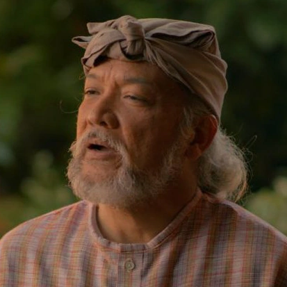

|
Juan Crisostomo Ibarra y Magsalin |
- Ibarra is a young man that had roots of Spanish ancestry
- He was rich, handsome, and well-educated
- He had come back to the Philippines after his studies abroad
|
|
Maria Clara de los Santos y Alba |
- Maria Clara was adopted by Tiago when she was young
- Her real father is Padre Damaso
- She was devoted to the church and was very religious
- She is the fiance and lover of Ibarra
|
 |
Elias |
- He is one of Ibarras closest allies
- Currently a fugitive on the run that aims to reshape society
- Used to belong to a very wealthy family
|
|
Kapitan Tiago |
- He is the adoptive father of Maria Clara
- Is the richest man in San Diego
- Very influencial and cooperative with church officials
|
 |
Padre Damaso |
- He was the priest of San Diego
- Is the real father of Maria Clara
- Was quite cruel and liked to punish physically
|
|
Padre Salvi |
- He is the priest of San Diego
- He didn't usually hurt people physically, instead he made them pay him in money
- Even though he never usually hurt people, he is much worse than Padre Damaso
|
|
Don Rafael Ibarra |
- He is the father of Ibarra
- He was the richest man in all of San Diego
- His family are the original owners of San Diego
- He was quite kind and polite, which constrasts his fathers personality.
|
|  |
Don Anastacio |
- Was also called Pilosopo Tasyo
- He used to study Philosophy in school and was quite smart
- He is labelled as crazy by others for his ideas
|
|
Sisa |
- She is the mother of Crispin and Basilio
- She used to be quite rich but abandoned it all for her husband
- Her husband has no job and sells her jewelry for gambling money, on top of that he is abusive
|
|
Crispin |
- He is the child of Sisa and the younger brother of Basilio
- Was a very clever child and maybe even smarter than his older brother
- He was wrongly accused of stealing 32 pesos from the church and was killed by Padre Salvi and the Sakristan Mayor
|
|
Basilio |
- He is the child of Sisa and the older brother of Crispin
- He was also wrongly included in the crime of stealing 32 pesos but escaped
- He was grazed by a bullet while escaping from the church
|
 |
Donya Victorina de Espadana |
- She is the wife of Don Tiburcio
- She was quite rich which constrasted her husband
- She felt like a high blood Spaniard and wore makeup all the time
|
 |
Don Tiburcio de Espadana |
- He is the husband of Donya Victorina
- Works as a quack doctor
- Though he is a Spaniard, his wife was more wealthy than he was
|
|
Donya Consolascion |
- She is the wife of the Alperes
- Started speaking spanish instead of Filipino after marrying the Alperes
- She used to work as a laundry woman
|
|
Alperes |
- He is the husband of Donya Consolascion
- The head of the guwardia sibil
- Was said to be unlucky due to marrying Donya Consolascion
|
|
Tiya Isabel |
- She is the sister of Kapitan Tiago
- She was the mother figure of Maria Clara after her mother had died
- She was the one that raised Maria Clara
|
Noli me Tangere Wiki | Fandom. (n.d.). https://noli-me-tangere.fandom.com/wiki/Noli_Me_Tangere_Wiki
Wiki, C. T. M. C. a. I. (n.d.). Maria Clara At Ibarra. Maria Clara at Ibarra Wiki. https://mariaclaraatibarra.fandom.com/wiki/Maria_Clara_At_Ibarra